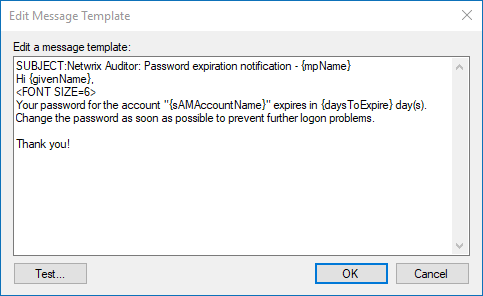

Question
How to customize Netwrix Auditor Password Expiration Notifier notifications and reports?
Answer
NOTE: You can find the templates by following the provided path (by default):
C:\Program Files (x86)\Netwrix Auditor\Password Expiration Alerting\Templates\%GUID%If you have multiple monitoring plans set up, refer to the Task Scheduler tasks to determine the appropriate GUID for the plan. The Password Expiration task in Task Scheduler will have
Netwrix Auditor - {%GUID_1%} - {%GUID_2%}name, where %GUID_2% will match the corresponding folder name.
IMPORTANT: Password Expiration Notifier uses UTF-8 encoding. Your email client should be set up to either automatically or explicitly detect UTF-8 encoding to correctly translate characters.
Locate templates
You can edit and customize the notification and report templates in Netwrix Auditor Password Expiration Notifier:
-
In the Start menu, select the Netwrix Auditor folder.
-
Open Netwrix Auditor Password Expiration Notifier.
-
Select the monitoring plan you would like to edit the notification and (or) report templates for, and click Edit.
-
To change notifications sent to users, select the Actions tab.
-
Check the Notify users checkbox, and click Customize to edit the corresponding notification template.
NOTE: Changes introduced are unique to the template. These changes will not be replicated from First time when password expires in template to Last time when password expires in template, etc.
-
-
To change the report template, select the Advanced tab.
-
Click Edit next to Customize the report template.
-
-
To change the report template for users managers, select the Actions tab.
-
Check the Send reports to the users' managers checkbox, and click Customize to edit the corresponding notification template.
-
Insert an image to the user notification email template
-
Select the appropriate template and click Customize.
-
Add the following HTML tag to the template body:
<img src="C:\pic.jpg" alt="image_description">NOTE: The image must be located in a shared folder with permissions to read this folder shared between all users being notified. Alternatively, a URL to the image can be used.
-
Click the Test button in the template editor window to send a test message.
Insert a hyperlink to the user notification email template
-
Select the appropriate template and click Customize.
-
Add the following HTML tag to the template body:
<a href="full_URL">Hyperlinked text</a> -
Click the Test button in the template editor window to send a test message.
Change the font size of the user notification email template
-
Select the appropriate template and click Customize.
-
Add the following tag to the template body (with values ranging from 1 to 7):
<FONT SIZE = Your_Font_Size> -
Click the Test button in the template editor window to send a test message.
NOTE: The tag affects the lines after the tag. The example provided below affects the lines after
Hi {givenName},.
Include an attribute in the email template
NOTE: You can use other attributes in your Password Expiration Notifier emails. Learn more about Active Directory attributes in All attributes ⸱ Microsoft 🡥.
-
Select the appropriate template and click Customize.
-
Add the following attribute to the template body:
{CanonicalName} -
Click the Test button in the template editor window to send a test message.
Edit email header and footer
You can disable header and footer in Password Expiration Notifier emails. Refer to the following article for additional information: Hide and Disable Header and Footer in Password Expiration Notifier Emails.